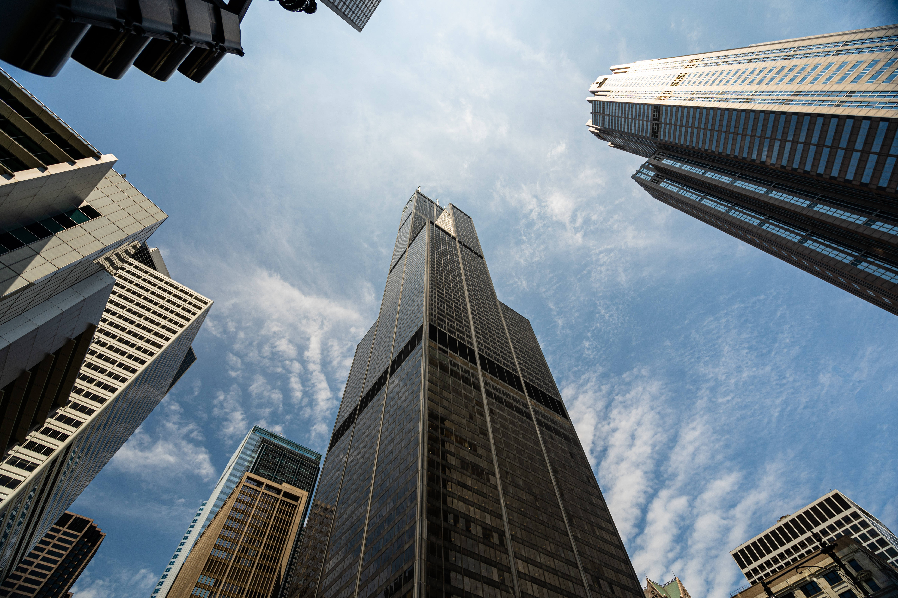
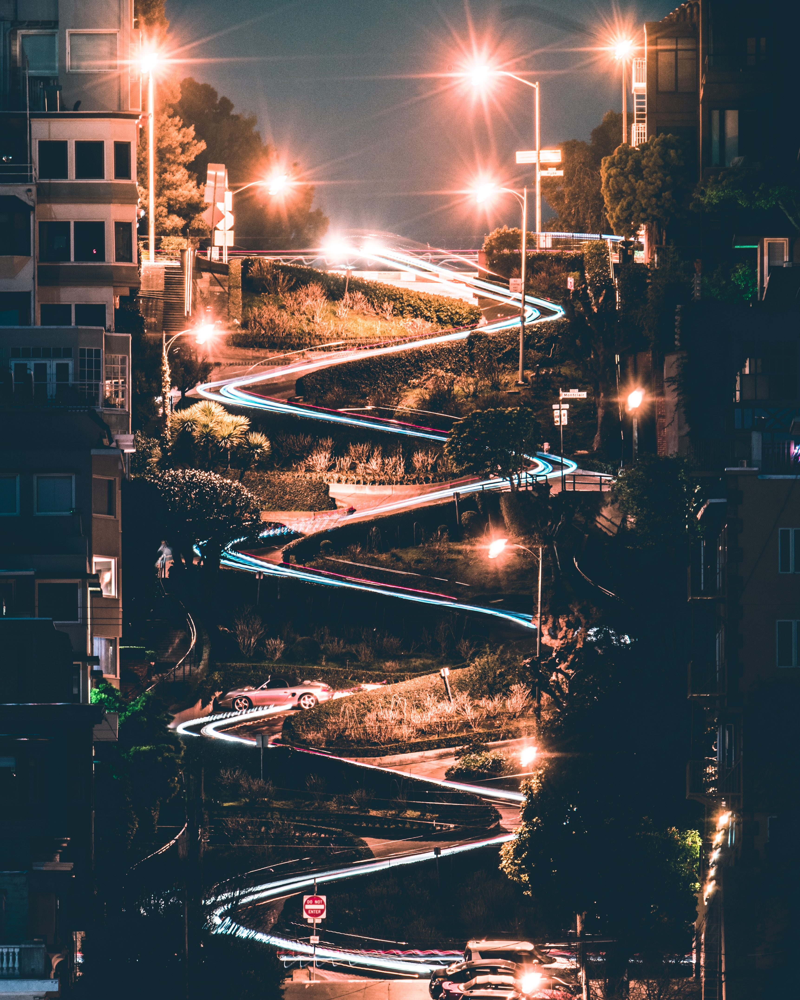

Keep Calm and Travel to

- CHICAGO
- Navy Pier
Navy Pier is where you go in Chicago for events, free public programs, attractions, culture, dining, shopping and more. It’s where fun lives large, whether you’re a visitor or local, with family or friends.
Navy Pier is one of Chicago’s most popular tourist destinations—and with good reason. The 3,300-foot (1,010-meter) pier jutting into the waters of Lake Michigan, originally constructed in 1916 as a freight dock and public space,
encompasses almost 50 acres (20 hectares) of exhibits, rides, parks, and family attractions.


Learn more
- Magnificent Mile
One of the best places to shop in the world, the Magnificent Mile is home to an incredible number of department stores and luxury retailers with several multi-storey malls also dotted about. Stretching from Oak Street to the Chicago River, this gleaming section of Michigan Avenue is the place to go if you want to shop until you drop.

Learn more
- Sears Tower

While some may argue that the skyscraper, renamed Willis Tower in 2009, has lost a bit of its swagger since it lost its status as the world’s tallest building, the Sears Tower remains one of the most popular tourist destinations in Chicago.

Learn more
- UNITED STATES OF AMERICA
- Statue of Liberty

Statue of Liberty is a colossal neoclassical sculpture located on Liberty Island in New York Harbor within New York City, in the United States.
The statue was designed by French sculptor Frédéric Auguste Bartholdi and its metal framework was built by Gustave Eiffel. It was a gift from the people of France to the United States and was dedicated on October 28, 1886.
The statue is a figure of Libertas, the Roman goddess of freedom, who holds a torch above her head with her right hand and carries a tablet in her left hand inscribed with the date of the U.S. Declaration of Independence, July IV MDCCLXXVI (July 4, 1776).
A broken chain and shackle lie at her feet as she walks forward, commemorating the national abolition of slavery. The statue has become an icon of freedom and of the United States, seen as a symbol of welcome to immigrants arriving from abroad. It is administered by the National Park Service and is a major tourist attraction.


Learn more
- Bryce Canyon National Park

Bryce Canyon National Park is a breathtaking display of rock formations. Technically, Bryce Canyon isn’t a canyon, but a series of natural amphitheaters. Mormon settlers once called the canyon home, but now most visitors come for the awe-inspiring views and the magnificent hiking opportunities.


Learn more
- Central Park
An oasis of green amongst New York's concrete canyons, Central Park is a sanctuary of peace and quiet for visitors and locals alike.
A walk, pedal, or carriage ride through the crisscrossing pathways of Central Park is a must-do on anyone's New York City itinerary. In winter, you can even lace up your skates and glide across Wollman Rink. This huge park in the city center, a half-mile wide and 2.5 miles long, is one of the things that makes New York such a beautiful and livable city.
Learn more
- SAN FRANCISCO
- Golden Gate Bridge

One landmark that has become synonymous with the city of San Francisco and its skyline is the Golden Gate Bridge.
Visitors from all over come to catch a glimpse of this iconic structure that dominates the city’s landscape and character.
Witnessing the Golden Gate Bridge at sunset is an even more spectacular event where the colors of the sky meet the colors of San Francisco’s classic landmark.


Learn more
- Fisherman’s Wharf

One of the most popular attractions in San Francisco, Fisherman’s Wharf runs all the way from Pier 39 through to Municipal Pier at the end of Aquatic Park. For over a century its historic waterfront was the hub of San Francisco’s fishing fleet and is still famous for having some of the best seafood restaurants in the city.

Learn more
- Lombard Street

No place in San Francisco illustrates the city’s unique geography better than Lombard Street. The famous thoroughfare winds like a snake down yet another steep hill. On either side are millionaire mansions that hark back to the Victorian era and curved gardens landscaped to the hilt.


Learn more
Go back to:
Chicago
USA
San Francisco